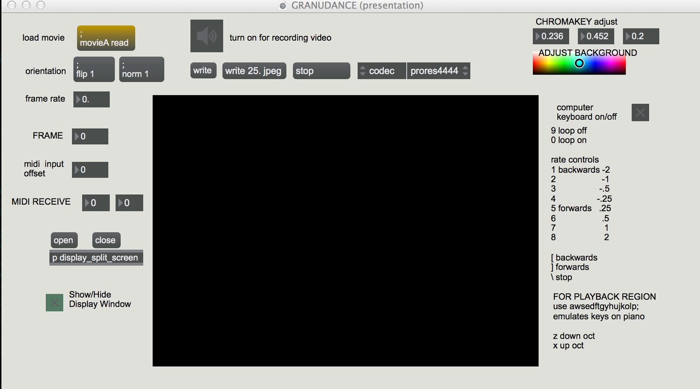
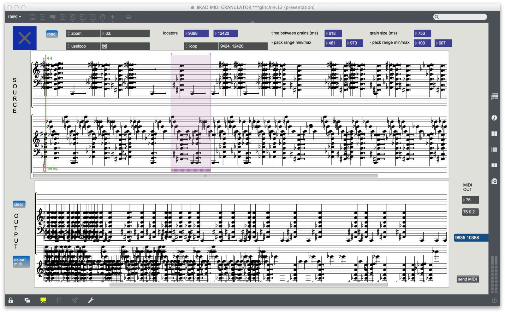

\"Glitch\"
Glitch
Authors
Dr. Bradley Robin, DePaul University, Chicago, IL USA - composer, programmer
Sarah Joyce Church, Franklin D. Roosevelt High School, Fort Worth, TX USA - dancer, choreography
PubPub Link
https://nime.pubpub.org/pub/hh6fsa3p/draft?access=7adyn8dp
Conference Abstraction
Music was composed by improvising with a MIDI granulator. The dance was created by routing the piano notes through a patch that controls the video playback region. Thus, repetition in the music will create patterns in the computer controlled dancer. The same patch contains GUI allowing the user to manually control the dance, including looping, playback speed and direction, and playback region. The patch also allows for video capture, creating the opportunity to interact with a live dancer.
Requirements
Glitch as a fixed piece can be performed three ways: as a fixed media video presented through speakers, performed with live piano alongside the finished video, or as a live electronics piece, wherein a MIDI piano or keyboard provides sound as well as controls the video dance.
As a composition and performance tool, the granulation software can be used to generate MIDI material live, which can be routed to control video and generate sound. Thus, Glitch is an example of the software’s potential.
Program Description
Glitch was composed by improvising with a MIDI granulator. Originally, a short dance sequence was improvised by the dancer. The actual choreography for the video was then created by routing the piano notes through a patch that controls the video playback region. Thus, repetition in the music creates patterns in the computer controlled dancer. The same patch contains GUI allowing the user to manually control the dance, including looping, playback speed and direction, and playback region. The patch also allows for video capture, creating the opportunity to interact with a live dancer.
VIDEO
Software screenshots:
video control software


Software created using Max/MSP
midi granulation, score generation software


Software was created with Max/MSP using the Cage library.
score:
Attachment: Bradley Robin Glitch score.pdf 382 KB · on PubPub CDN
ACKNOWLEDGEMENTS
— many thanks to CEMI at UNT, where the seeds of inspiration began to grow, Claudia Howard Queen, my original music for dance mentor, the SAI program at Northwestern where my artistic aspirations finally began to congeal, and to Nicole for endless hours of patience and support.